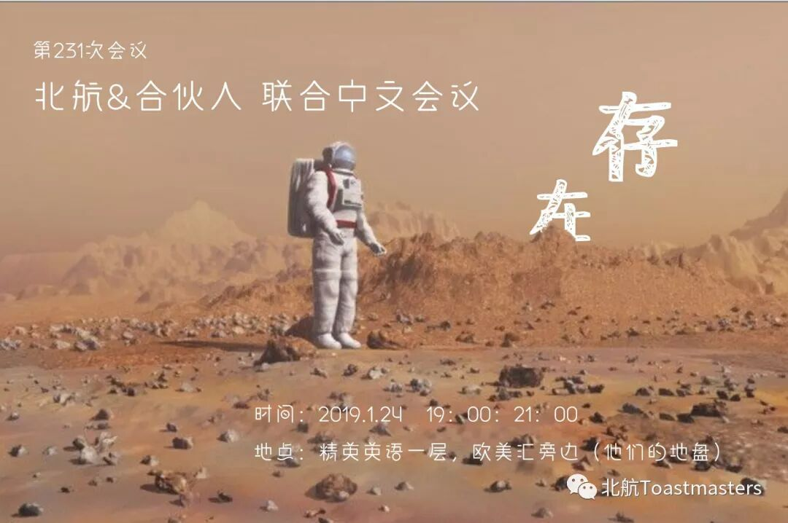

北航&合伙人 联合会议
是否存在一场不受语言限制的会议，让我在母语的氛围下畅所欲言，口吐莲花；是否存在一次别开生面的会议，多一点新面孔，多一些新环境；是否存在... ...
打住！真的存在！这次的会议满足你。
北航头马俱乐部 将与 合伙人头马俱乐部 联合举办中文会议《存在》，时间地点呢，在对方的地盘，周四晚七点开始。
如果之前特想参加咱们的会议，但又担忧自己的英文水平望而却步的时候，这一次机会可要抓紧了！
如果有小伙伴想去看一看的，请后台留言，小编会联系你，并邀请你周四随我们一起去对方的地盘撒野狂飙中文！
会议是中文会议，不你口里吐的是不是莲花我就不知道了，没准是象牙呢
接着往下看，会议主要角色和议程就在下面哦~
北航&合伙人联合会议
……………………………………………
❀主题：存在
❀主持人：尧超越
❀总点评：孙兆永
❀时间官：合伙人
❀搞笑官：吴政辰
❀备稿1：龚新宇
❀点评1：杜菲
❀备稿2：露丹
❀点评2：张咪
❀备稿3：傅晓城
❀点评3：经倩霞
❀备稿4：东子
❀点评4：樊子华
❀备稿5: 张朋举
❀点评5：黄蓉
❀备稿6：张彩凤
❀点评6：张艺
❀备稿 7: 赵贝贝
❀点评7：王烈
❀备稿8：唐茂国
❀点评8：陈纪凯
别忘了后台留言，我拉你进群鸭
海报|Chen
文案|Chen
编辑|Chen
别忘了后台留言